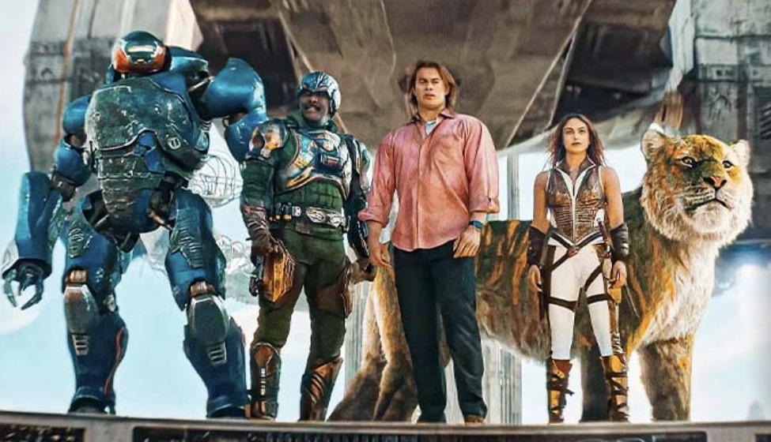
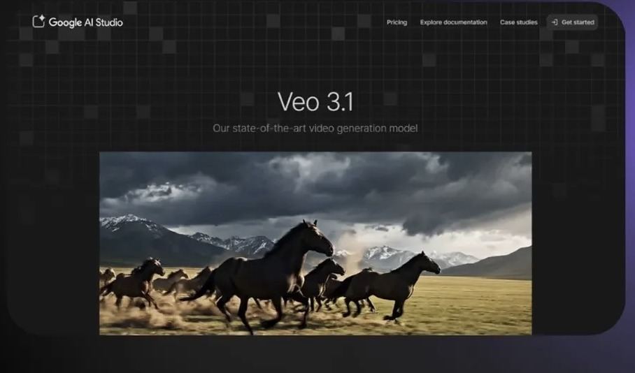
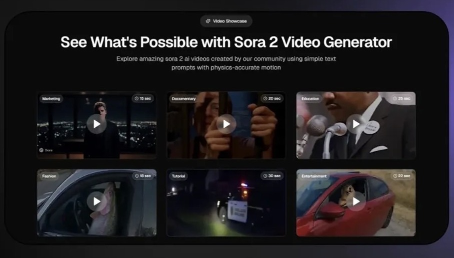
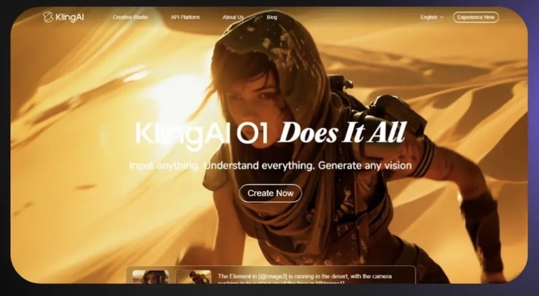
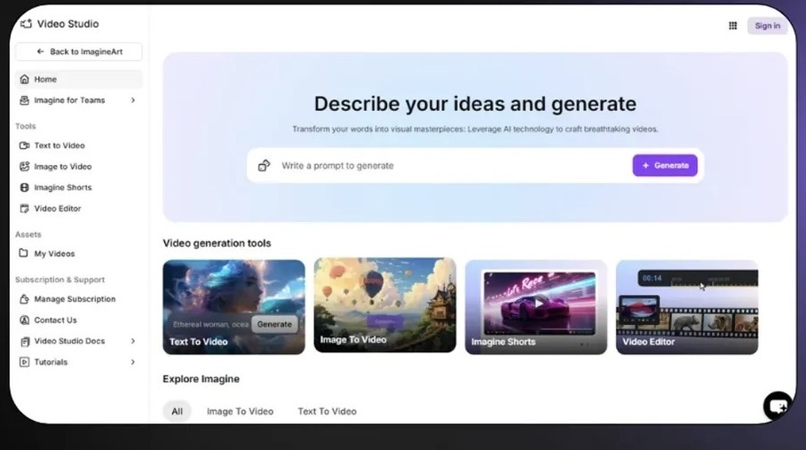
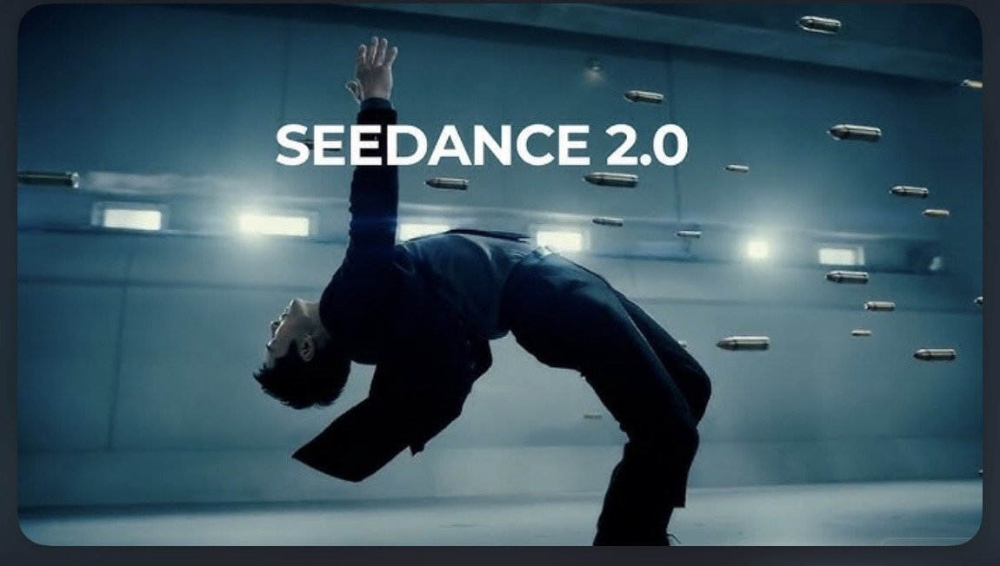

Hollywood gastou milhões e o CGI dividiu a crítica. Veja quem entregaria cinema de verdade — por uma fração.

Pra máximo realismo, qualidade cinematográfica e cenas de alta fidelidade movidas por IA.

Uma das melhores escolhas pra máximo realismo e qualidade cinematográfica — cenas de IA com física que convence.

Excelente pra alto realismo a um custo menor. O Nframe define os frames de início e fim — ideal pra projetos profissionais e experimentais.

A melhor pra controle criativo avançado: Multi-Motion Brush e movimentos de câmera precisos — pan, tilt e zoom.

Gera vídeo e áudio juntos, até 2K e multi-shot, mantendo o personagem consistente com até 12 referências numa cena só.
